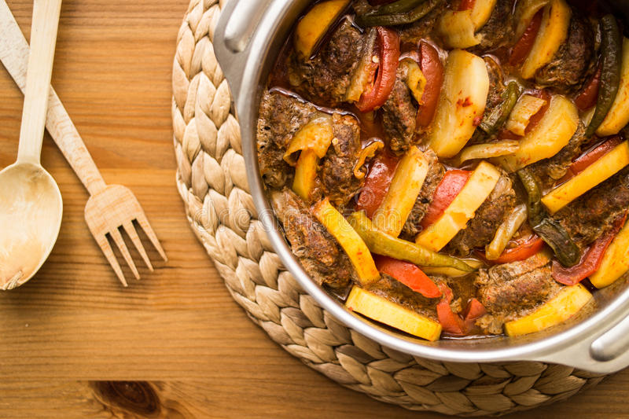

Izmir meatball

Description
Izmir meatball is an Turkished based dish. Originally it includes meat potato and tomato.
Ingredients
- Meat
- Onion and garlic
- Tomato paste
- Potato
- Green fresh pepper
- Egg
- Oil
- Salt and spices
Steps
- Mix egg meat and make little balls
- Cut potato in shape you like
- Make tomato mixture
- Cut peppers
- Bake in the oven
- Let the dish rest 5 min